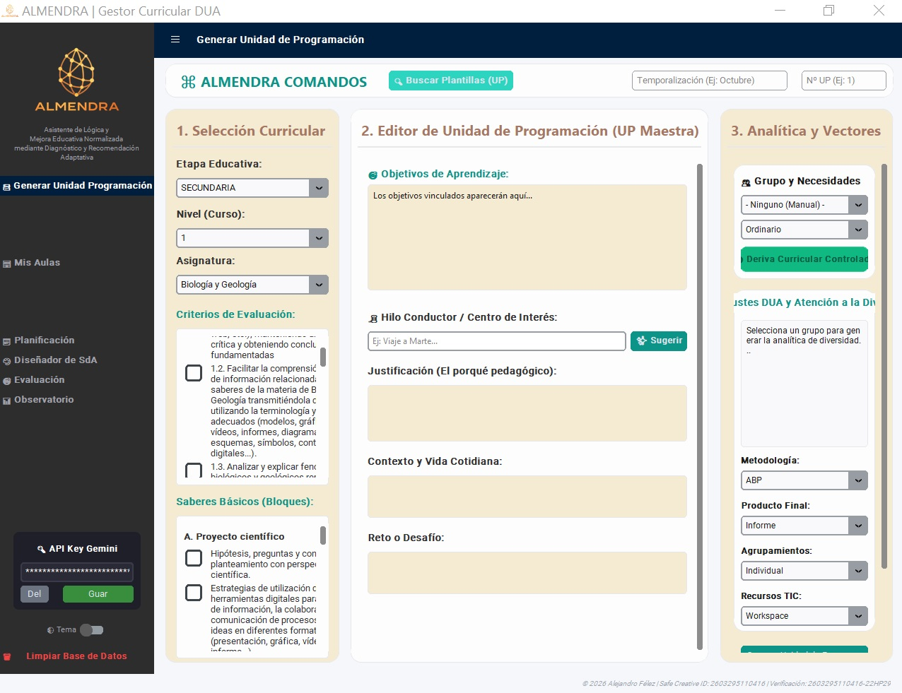
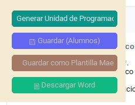

3
En este apartado se explica de manera detallada todas las acciones que se pueden realizar y completar en el apartado de generación de unidades didácticas
{"typeGame":"Mapa","instructions":"","showMinimize":false,"showActiveAreas":false,"author":"","url":"../content/resources/imagen59.jpg","authorImage":"","altImage":"","itinerary":{"showClue":false,"clueGame":"","percentageClue":40,"showCodeAccess":false,"codeAccess":"","messageCodeAccess":""},"points":[{"id":"p1209594334147","title":"Selección curricular","type":2,"url":"","video":"","x":0.3366584821795594,"y":0.23600997184086772,"x1":0,"y1":0,"points":[],"pointsd":[],"footer":"","author":"","alt":"","iVideo":0,"fVideo":0,"eText":"","iconType":0,"question":"","question_audio":"","toolTip":"","link":"","color":"#000000","fontSize":"14","map":{"id":"a1209594334147","pts":[{"id":"p12239102995","title":"","type":0,"url":"","video":"","x":0,"y":0,"x1":0,"y1":0,"points":[],"pointsd":[],"footer":"","author":"","alt":"","iVideo":0,"fVideo":0,"eText":"","iconType":0,"question":"","question_audio":"","toolTip":"","link":"","color":"#000000","fontSize":"14","map":{"id":"a12239102995","url":"","alt":"","author":"","pts":[]},"slides":[{"id":"s12239102995","title":"","url":"","author":"","alt":"","footer":""}],"tests":[],"activeSlide":0,"activeTest":0}],"url":"","alt":"","author":"","active":0},"slides":[{"id":"s1209594334147","title":"","url":"","author":"","alt":"","footer":""}],"tests":[],"activeSlide":0,"activeTest":0,"audio":""},{"id":"p885899821267","title":"Criterios de evaluación","type":2,"url":"","video":"","x":0.3471219698393705,"y":0.45715343882736653,"x1":0,"y1":0,"points":[],"pointsd":[],"footer":"","author":"","alt":"","iVideo":0,"fVideo":0,"eText":"","iconType":0,"question":"","question_audio":"","toolTip":"","link":"","color":"#000000","fontSize":"14","map":{"id":"a885899821267","pts":[{"id":"p189027759227","title":"","type":0,"url":"","video":"","x":0,"y":0,"x1":0,"y1":0,"points":[],"pointsd":[],"footer":"","author":"","alt":"","iVideo":0,"fVideo":0,"eText":"","iconType":0,"question":"","question_audio":"","toolTip":"","link":"","color":"#000000","fontSize":"14","map":{"id":"a189027759227","url":"","alt":"","author":"","pts":[]},"slides":[{"id":"s189027759227","title":"","url":"","author":"","alt":"","footer":""}],"tests":[],"activeSlide":0,"activeTest":0}],"url":"","alt":"","author":"","active":0},"slides":[{"id":"s885899821267","title":"","url":"","author":"","alt":"","footer":""}],"tests":[],"activeSlide":0,"activeTest":0,"audio":""},{"id":"p1620114574123","title":"Saberes básicos","type":2,"url":"","video":"","x":0.3501115377421737,"y":0.7277036143738089,"x1":0,"y1":0,"points":[],"pointsd":[],"footer":"","author":"","alt":"","iVideo":0,"fVideo":0,"eText":"","iconType":0,"question":"","question_audio":"","toolTip":"","link":"","color":"#000000","fontSize":"14","map":{"id":"a1620114574123","pts":[{"id":"p567115311426","title":"","type":0,"url":"","video":"","x":0,"y":0,"x1":0,"y1":0,"points":[],"pointsd":[],"footer":"","author":"","alt":"","iVideo":0,"fVideo":0,"eText":"","iconType":0,"question":"","question_audio":"","toolTip":"","link":"","color":"#000000","fontSize":"14","map":{"id":"a567115311426","url":"","alt":"","author":"","pts":[]},"slides":[{"id":"s567115311426","title":"","url":"","author":"","alt":"","footer":""}],"tests":[],"activeSlide":0,"activeTest":0}],"url":"","alt":"","author":"","active":0},"slides":[{"id":"s1620114574123","title":"","url":"","author":"","alt":"","footer":""}],"tests":[],"activeSlide":0,"activeTest":0,"audio":""},{"id":"p1383662895833","title":"Objetivos de aprendizaje","type":2,"url":"","video":"","x":0.6131935131888524,"y":0.2653519269332145,"x1":0,"y1":0,"points":[],"pointsd":[],"footer":"","author":"","alt":"","iVideo":0,"fVideo":0,"eText":"","iconType":0,"question":"","question_audio":"","toolTip":"","link":"","color":"#000000","fontSize":"14","map":{"id":"a1383662895833","pts":[{"id":"p1020631063966","title":"","type":0,"url":"","video":"","x":0,"y":0,"x1":0,"y1":0,"points":[],"pointsd":[],"footer":"","author":"","alt":"","iVideo":0,"fVideo":0,"eText":"","iconType":0,"question":"","question_audio":"","toolTip":"","link":"","color":"#000000","fontSize":"14","map":{"id":"a1020631063966","url":"","alt":"","author":"","pts":[]},"slides":[{"id":"s1020631063966","title":"","url":"","author":"","alt":"","footer":""}],"tests":[],"activeSlide":0,"activeTest":0}],"url":"","alt":"","author":"","active":0},"slides":[{"id":"s1383662895833","title":"","url":"","author":"","alt":"","footer":""}],"tests":[],"activeSlide":0,"activeTest":0,"audio":""},{"id":"p1445704625606","title":"Hilo conductor","type":2,"url":"","video":"","x":0.7253023095439712,"y":0.5236043541176805,"x1":0,"y1":0,"points":[],"pointsd":[],"footer":"","author":"","alt":"","iVideo":0,"fVideo":0,"eText":"","iconType":0,"question":"","question_audio":"","toolTip":"","link":"","color":"#000000","fontSize":"14","map":{"id":"a1445704625606","pts":[{"id":"p788021754237","title":"","type":0,"url":"","video":"","x":0,"y":0,"x1":0,"y1":0,"points":[],"pointsd":[],"footer":"","author":"","alt":"","iVideo":0,"fVideo":0,"eText":"","iconType":0,"question":"","question_audio":"","toolTip":"","link":"","color":"#000000","fontSize":"14","map":{"id":"a788021754237","url":"","alt":"","author":"","pts":[]},"slides":[{"id":"s788021754237","title":"","url":"","author":"","alt":"","footer":""}],"tests":[],"activeSlide":0,"activeTest":0}],"url":"","alt":"","author":"","active":0},"slides":[{"id":"s1445704625606","title":"","url":"","author":"","alt":"","footer":""}],"tests":[],"activeSlide":0,"activeTest":0,"audio":""},{"id":"p1212386823471","title":"Ajuste clase","type":2,"url":"","video":"","x":0.9779207973308389,"y":0.3756000407691141,"x1":0,"y1":0,"points":[],"pointsd":[],"footer":"","author":"","alt":"","iVideo":0,"fVideo":0,"eText":"","iconType":0,"question":"","question_audio":"","toolTip":"","link":"","color":"#000000","fontSize":"14","map":{"id":"a1212386823471","pts":[{"id":"p1672904832779","title":"","type":0,"url":"","video":"","x":0,"y":0,"x1":0,"y1":0,"points":[],"pointsd":[],"footer":"","author":"","alt":"","iVideo":0,"fVideo":0,"eText":"","iconType":0,"question":"","question_audio":"","toolTip":"","link":"","color":"#000000","fontSize":"14","map":{"id":"a1672904832779","url":"","alt":"","author":"","pts":[]},"slides":[{"id":"s1672904832779","title":"","url":"","author":"","alt":"","footer":""}],"tests":[],"activeSlide":0,"activeTest":0}],"url":"","alt":"","author":"","active":0},"slides":[{"id":"s1212386823471","title":"","url":"","author":"","alt":"","footer":""}],"tests":[],"activeSlide":0,"activeTest":0,"audio":""},{"id":"p809537163137","title":"Botones acción","type":0,"url":"../content/resources/imagen58.jpg","video":"","x":0.9091607355663661,"y":0.9371965871273893,"x1":0,"y1":0,"points":[],"pointsd":[],"footer":"El botón de generar unidad de programación es el encargado de generar lo objetivos de aprendizaje. El resto de botones hace lo que indica","author":"","alt":"","iVideo":0,"fVideo":0,"eText":"","iconType":0,"question":"","question_audio":"","toolTip":"","link":"","color":"#000000","fontSize":"14","map":{"id":"a809537163137","pts":[{"id":"p1022177982850","title":"","type":0,"url":"","video":"","x":0,"y":0,"x1":0,"y1":0,"points":[],"pointsd":[],"footer":"","author":"","alt":"","iVideo":0,"fVideo":0,"eText":"","iconType":0,"question":"","question_audio":"","toolTip":"","link":"","color":"#000000","fontSize":"14","map":{"id":"a1022177982850","url":"","alt":"","author":"","pts":[]},"slides":[{"id":"s1022177982850","title":"","url":"","author":"","alt":"","footer":""}],"tests":[],"activeSlide":0,"activeTest":0}],"url":"","alt":"","author":"","active":0},"slides":[{"id":"s809537163137","title":"","url":"","author":"","alt":"","footer":""}],"tests":[],"activeSlide":0,"activeTest":0,"audio":""},{"id":"p340136414796","title":"Buscar plantillas guardadas","type":2,"url":"","video":"","x":0.5892769699664271,"y":0.11005254949180825,"x1":0,"y1":0,"points":[],"pointsd":[],"footer":"","author":"","alt":"","iVideo":0,"fVideo":0,"eText":"","iconType":0,"question":"","question_audio":"","toolTip":"","link":"","color":"#000000","fontSize":"14","map":{"id":"a340136414796","pts":[{"id":"p32283764947","title":"","type":0,"url":"","video":"","x":0,"y":0,"x1":0,"y1":0,"points":[],"pointsd":[],"footer":"","author":"","alt":"","iVideo":0,"fVideo":0,"eText":"","iconType":0,"question":"","question_audio":"","toolTip":"","link":"","color":"#000000","fontSize":"14","map":{"id":"a32283764947","url":"","alt":"","author":"","pts":[]},"slides":[{"id":"s32283764947","title":"","url":"","author":"","alt":"","footer":""}],"tests":[],"activeSlide":0,"activeTest":0}],"url":"","alt":"","author":"","active":0},"slides":[{"id":"s340136414796","title":"","url":"","author":"","alt":"","footer":""}],"tests":[],"activeSlide":0,"activeTest":0,"audio":""}],"isScorm":0,"textButtonScorm":"Guardar la puntuación","repeatActivity":true,"weighted":100,"textAfter":"","evaluationG":0,"selectsGame":[{"typeSelect":0,"numberOptions":4,"quextion":"","options":["","","",""],"solution":"","solutionWord":"","percentageShow":35,"msgError":"","msgHit":"","tests":[],"respuesta":"","numbertests":0}],"isNavigable":true,"showSolution":true,"timeShowSolution":3,"version":3,"percentajeIdentify":100,"percentajeShowQ":100,"percentajeQuestions":100,"autoShow":false,"autoAudio":true,"optionsNumber":0,"evaluation":false,"evaluationID":"d35416bc-50c0-444e-a37c-18a3f3232477","id":"idevice-1784568996749-ymft3drls","order":"","hideScoreBar":false,"hideAreas":false,"msgs":{"msgSubmit":"Enviar","msgIndicateWord":"Proporciona una palabra o expresión","msgClue":"¡Genial! La pista es:","msgErrors":"Errores","msgHits":"Aciertos","msgScore":"Puntuación","msgWeight":"Peso","msgMinimize":"Minimizar","msgMaximize":"Maximizar","msgFullScreen":"Pantalla Completa","msgNoImage":"Pregunta sin imágenes","msgSuccesses":"¡Correcto! | ¡Excelente! | ¡Genial! | ¡Muy bien! | ¡Perfecto!","msgFailures":"¡No era eso! | ¡Incorrecto! | ¡No es correcto! | ¡Lo sentimos! | ¡Error!","msgTryAgain":"Necesitas al menos %s% de respuestas correctas para obtener la información. Inténtalo de nuevo.","msgEndGameScore":"Comience la partida antes de guardar la puntuación.","msgScoreScorm":"La puntuación no se puede guardar porque esta página no forma parte de un paquete SCORM.","msgPoint":"Punto","msgAnswer":"Responder","msgOnlySaveScore":"¡Solo puede guardar la puntuación una vez!","msgOnlySave":"Solo puede guardar una vez","msgInformation":"Información","msgYouScore":"Su puntuación","msgOnlySaveAuto":"Su puntuación se guardará después de cada pregunta. Solo puede jugar una vez.","msgSaveAuto":"Su puntuación se guardará automáticamente después de cada pregunta.","msgSeveralScore":"Puede guardar la puntuación tantas veces como quiera","msgYouLastScore":"La última puntuación guardada es","msgActityComply":"Ya ha realizado esta actividad.","msgPlaySeveralTimes":"Puede realizar esta actividad cuantas veces quiera","msgClose":"Cerrar","msgPoints":"puntos","msgPointsA":"Puntos","msgQuestions":"Preguntas","msgAudio":"Audio","msgAccept":"Aceptar","msgYes":"Sí","msgNo":"No","msgShowAreas":"Mostrar áreas activas","msgShowTest":"Mostrar cuestionario","msgGoActivity":"Haz clic aquí para hacer esta actividad","msgSelectAnswers":"Selecciona las opciones correctas y haz clic en el botón ","msgCheksOptions":"Marca todas las opciones en el orden correcto y haz clic en ","msgWriteAnswer":"Escribe la palabra o frase correcta y haz clic en ","msgIdentify":"Identifica","msgSearch":"Buscar","msgClickOn":"Haz clic en","msgReviewContents":"Debes revisar el %s% de los contenidos de la actividad antes de completar el cuestionario.","msgScore10":"¡Todo está perfecto! ¿Quieres repetir esta actividad?","msgScore4":"No has superado la prueba. Revisa sus contenidos e intentarlo de nuevo. ¿Quieres repetir la actividad?","msgScore6":"¡Genial! Has superado la prueba, pero seguro que puedes mejorar. ¿Quieres repetir la actividad?","msgScore8":"¡Casi perfecto! Aún puedes hacerlo mejor. ¿Quieres repetir la actividad?","msgNotCorrect":"¡No es correcto! Has hecho clic en","msgNotCorrect1":"¡No es correcto! Has hecho clic en","msgNotCorrect2":"y la respuesta correcta es","msgNotCorrect3":"¡Prueba otra vez!","msgAllVisited":"¡Genial! Has visitado los puntos requeridos.","msgCompleteTest":"Puedes hacer la prueba.","msgPlayStart":"Pulsa aquí para empezar","msgSubtitles":"Subtítulos","msgSelectSubtitles":"Selecciona un archivo de subtítulos. Formatos admitidos:","msgNumQuestions":"Número de preguntas","msgHome":"Inicio","msgReturn":"Volver","msgCheck":"Comprobar","msgUncompletedActivity":"Actividad no completada","msgSuccessfulActivity":"Actividad superada. Puntuación: %s","msgUnsuccessfulActivity":"Actividad no superada. Puntuación: %s","msgTypeGame":"Mapa"}}


En este apartado mientras los desplegables habilitados se selecciona la etapa educativa, curso y materia sobre la que se quiere realizar la unidad didáctica. ALMENDRA tiene incorporados toda la información el curriculo de la Comunidad Autónoma de Aragón.
En este apartado se mostraran las casillas con los criterios de evaluación del curso y materia seleccionados previamente. Deben de marcarse uno o varios criterios de manera indistinta. Esta selección es sobre la que luego se extraen los descriptores operativos que se trabajarán en la unidad didáctica
En este cuadro se pueden seleccionar uno o varios de los saberes correspondientes a la selección de curso y materia realizada anteriormente. La selección de estos saberes se cruzará con los criterios de evaluación seleccionados para generar los objetivos de aprendizaje
En este cuadro se mostrará la generación realizada por el modelo de inteligencia artificial de los objetivos de aprendizaje. De manera muy simplificada estos objetivos se obtienen de cruzar los saberes con los criterios de evaluación.
El programa, a través de su System Prompt, traslada instrucciones claras a los modelos de inteligencia artificial basados en la taxonomía de Bloom y clasificación por desempeño de estos objetivos
Se puede escribir un hilo conductor para que el modelo de inteligencia artifical desarrolle el resto de apartados de la unidad (contexto, justificación y desafio) en base a este hilo conductor.
Este hilo conductor posteriormente se convierte en el hilo narrativo sobre el que versará la situación de aprendizaje
En estos desplegables se puede seleccionar la clase en la que se va a impartir la unidad didáctica y sobre la cual se realizará análisis de los descriptores operativos críticos en función de la selección curricular realizada.
En este botón se pueden cargar las unidades didácticas previamente guardadas. Esta acción permite su carga y ajuste a las caraceterísticas de un nuevo grupo-clase
Su navegador no es compatible con esta herramienta.